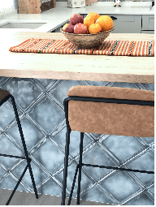

.
INTERIORES

BLUE
Reforma integral de una pequeña caseta de huerta en una vivienda
de diseño con un amplio porche. Está inspirada en el color azul,
especialmente el azul celeste, es percibido también como símbolo de serenidad,
calma, paz, orden, amplitud, confianza, honestidad y fidelidad (por ende, amistad y
simpatía como la que tienen nuestros clientes)
BAMBU
Diseño espectacular proyecto Bambú, en Gran Vía de Caravaca de la
Cruz; el estilo contemporáneo se identifica en este espacio
decorado de esta forma es luminoso y amplio, pero también acogedor.
Aquí no tienen cabida los detalles recargados sino una mezcla de
líneas rectas y simples.
Miryam Rubio
Volver